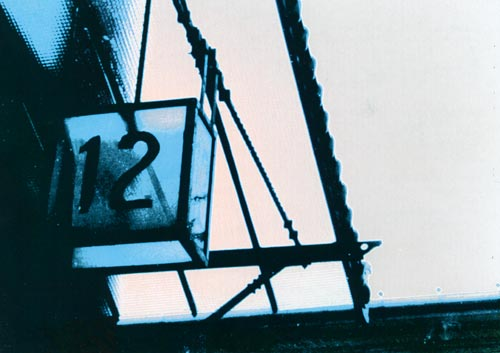

Details
Vernissage: 5. Mai 2000
Eröffnung: Ministerialrat Dr. Elfriede Fritz (BMSG)
Die Ausstellung war bis Ende Juni 2000 zu besichtigen.
Wettbewerbsarbeiten zum Thema Alkoholismus

Vernissage: 5. Mai 2000
Eröffnung: Ministerialrat Dr. Elfriede Fritz (BMSG)
Die Ausstellung war bis Ende Juni 2000 zu besichtigen.